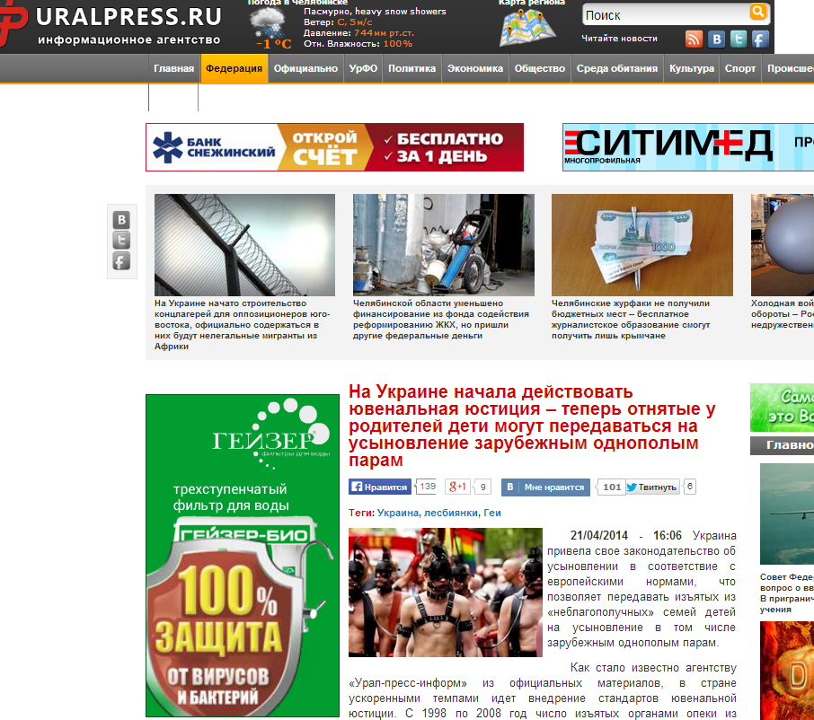
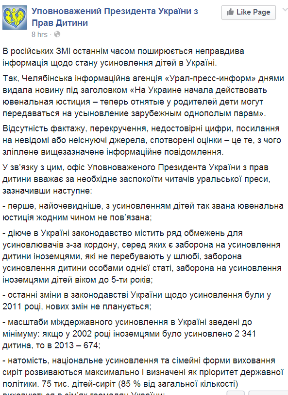

Fake: Украинских детей разрешили усыновлять иностранным геям
Российские СМИ — например, Челябинское информационное агенство «Урал-пресс-информ» — распространяли информацию о том, что якобы в Украине начала действовать ювенальная юстиция.Журналисты утверджают, что теперь отнятые у родителей дети могут передаваться на усыновление зарубежным однополым парам.
Однако Уполномоченный Президента Украины по Правам Ребенка опроверг данную информацию.
По его словам, сообщение составлено из недостоверных цифр, даны ссылки на неизвестные или несуществующие источники, а также искривлены оценки.
Офис Уполномоченныого Президента Украины сообщил следующее:
— с усыновлением детей так называемая ювенальная юстиция никаким образом не связана;
— действующее в Украине законодательство имеет ряд ограничений для усыновителей из-за границы, такие как запрет на усыновление иностранцами, которые не находятся в браке, запрет на усыновление ребенка особами одного пола, запрет на усыновлениям иностранцами детей в возрасте до 5-ти лет;
— последние изменения в законодательстве Украины про усыновление были в 2011, и новых не планируется;
— масштабы межгосударственного усыновления в Украине сведены к минимуму: если в 2002 году иностранцами был усыновлен 2 341 ребенок, то в 2013 – 674;
— в это же время, национальное усыновление и семейные формы воспитания сирот максимально развиваются и определены как приоритет государственной политики.75 000 детей-сирот (85% от общего количества) воспитываются в семьях граждан Украины;
— количество сирот в Украине уменьшается: 103 000 – в 2010 году, 90 000 – в 2013-ом.
— с 1998 по 2008 год количество детей, которые на протяжении года теряют родительскую опеку, сократилось почти вдвое: с 22 800 до 14 800.
Офис Уполномоченного Президента Украины обратил внимание журналистов на слова Уполномоченного по Правам Ребенка при Президенте РФ П. Астахова, которые были произнесены, собственно, в том самом Челябинске месяц назад: «Мы запросили данные по детям-сиротам, по детским учреждениям Крыма.Ситуация на самом деле неплохая, достаточно оптимистичная.Очень много приемных семей, которые в последние годы забирали детей».
Также офис призвал российские СМИ быть рассудительными и распространять только правдивую информацию.Сообщил, что известно про множество проблем детей-сирот и семей в России, поэтому посоветовал челябинским журналистам направить свой пыл на их решение.
Posted On: 2014-04-24T21:00:00


Content Date: 2014-04-24
Download Date: 2021-07-16
Document ID: L0C04FB3J